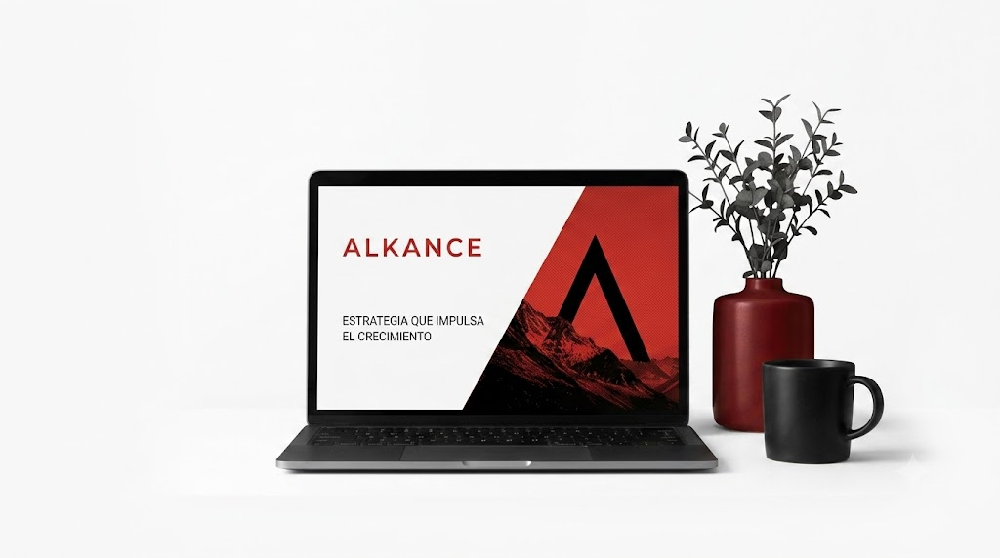

Para emprendedores
Soluciones accesibles y estratégicas para lanzar tu marca.
Sistema de diseño · v2
Todo lo que ves en esta página se genera desde
design/tokens.json y src/styles/components.css.
Ningún valor está escrito a mano aquí, así que esta documentación no
puede quedar desactualizada respecto del código que se despliega.
Tres capas. Cada una solo puede referenciar a la anterior. La regla que sostiene el sistema: los componentes nunca consumen primitivos.
La paleta cruda: color.ink.900, space.5.
Sin significado asignado. No se usa en UI.
El rol: semantic.fg.default. Describe la función, no el
color. Esta es la capa que se usa.
Decisiones de una pieza concreta:
component.button.primary-bg. Solo cuando el valor define
el contrato visual del componente.
Por qué importa
El build emite los alias como var(), no como el valor plano. Es
decir, --ak-semantic-bg-canvas: var(--ak-color-ink-0). Cambiar un
primitivo reencamina toda la cascada en runtime, sin recompilar.
Blanco domina. El negro es acción. El rojo es puntuación: si ocupa más del ~5% de una pantalla, sobra. Cada muestra indica su contraste sobre blanco.
La flecha indica a qué primitivo apunta cada rol. Esta indirección es el motivo por el que la marca puede cambiar de color sin tocar un componente.
Escala fluida con clamp(): no hay una sola media query de
tipografía en el sitio. Redimensiona la ventana y observa. El valor que se
muestra es la referencia desktop, que es la que importa Figma.
Reglas
A mayor tamaño, menor peso y tracking más negativo. Los titulares van en
weight.medium (500), nunca en bold. El
leading.tight es 0.95: bajo 1, para que las líneas del h1 se
traben entre sí.
Escala base 4px. En un sitio minimalista el espaciado es el diseño: nunca inventes un valor fuera de esta escala.
Los dos tokens fluidos
space.section gobierna el ritmo vertical de toda sección y
space.gutter el margen lateral de todo contenedor. Dos tokens
gobiernan la respiración del sitio entero.
Render en vivo, más el HTML y el CSS real de cada pieza —
extraído de components.css durante el build, no copiado a mano.
La pestaña «Tokens» lista lo que consume cada componente.
Estrategia, branding & diseño
El más elegidoSoluciones accesibles y estratégicas para lanzar tu marca.
Validamos tu idea en tiempo récord antes de escribir una sola línea de código.
Identidades visuales pensadas nativamente para pantallas y apps.
Estrategia, branding & diseño

Estrategia
Modelos de negocio y sprints de descubrimiento.
Diseño de innovación
Diseño centrado en el usuario e IA estratégica.
Crecimiento
Rentabilidad estructurada de tu marca.
No necesitas más desarrollo. Necesitas claridad.
El mayor riesgo en etapas tempranas no es técnico, es estratégico.
Profundizamos en tu negocio y objetivos.
Ideamos y prototipamos soluciones en conjunto.
Entrar o proponer
Definición del reto o propuesta inicial.
Ideación y conceptualización
Generación de alternativas estratégicas.
Lucide —
~1600 iconos SVG de trazo, licencia ISC. El trazo va en 1.5 y no en el 2
por defecto: acompaña la tipografía de peso medium del sistema. Cada icono
hereda currentColor, así que nunca se le pinta un color a mano.
Haz clic en un nombre para copiar su markup. Ver design/ICONS.md.
El mapa completo: nombre del token, variable CSS, valor resuelto y su lugar
en la arquitectura. Generada desde tokens.json en cada build.
| Token | Variable CSS | Valor | Capa | Descripción / uso recomendado |
|---|